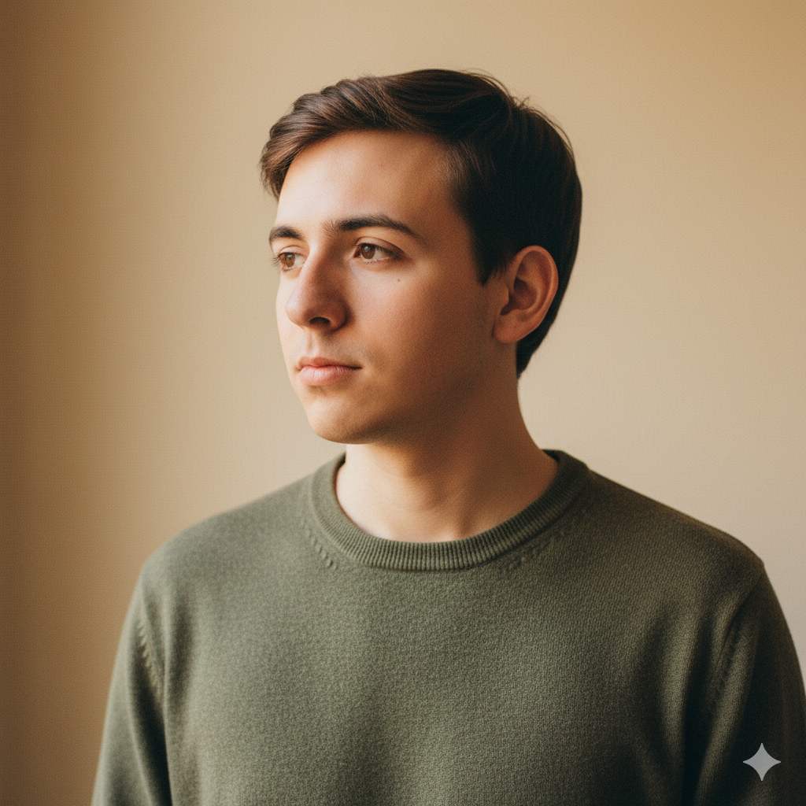

Soy Rodolfo Gaspary. Desarrollador web independiente en Lima.
Construyo sitios web a medida pensados para que los negocios capten más clientes. Trabajo de forma selectiva y honesta, con pocos proyectos a la vez, priorizando la calidad sobre el volumen.
"Una web no es un proyecto de diseño: es una herramienta de negocio. Por eso mi trabajo empieza siempre con una pregunta antes de escribir una línea de código — ¿qué quieres que esta web logre para ti?"
Cómo trabajo
Creo que un sitio web no es un proyecto de diseño: es una herramienta de negocio. Por eso mi trabajo empieza siempre con una pregunta antes de escribir una línea de código: ¿qué quieres que esta web logre para ti? Más clientes, más ventas, aparecer en Google, transmitir confianza. La respuesta define todo lo demás.
Soy desarrollador, pero con cabeza de negocio. No me interesa construir algo que se vea impresionante si no mueve la aguja para tu empresa. Esa diferencia es la que separa una web que se ve bien de una web que trabaja para ti.
Por qué independiente y selectivo
Trabajo con pocos proyectos a la vez, de forma deliberada. Esto me permite dos cosas que una agencia saturada no puede ofrecer:
- Honestidad real. No necesito cerrar tu proyecto a toda costa, así que puedo decirte cuando algo no vale la pena construir. Ese consejo, muchas veces, te ahorra dinero.
- Atención de verdad. Cuando trabajamos juntos, no eres un ticket en una cola. Hablas directamente conmigo.
Mi enfoque en tres ideas
- Negocio primero, código después.La mejor decisión técnica es inútil si no mueve el negocio.
- Claridad sobre complejidad.Te explico todo en términos que puedes usar para decidir, sin jerga.
- Calidad sobre cantidad.Prefiero hacer pocos proyectos bien que muchos a medias.
A quién ayudo
Trabajo principalmente con pequeñas y medianas empresas en Lima —y en todo el Perú de forma remota— que necesitan un sitio web construido con criterio: estudios profesionales, negocios locales, emprendimientos en crecimiento, y empresas que quieren dejar de improvisar su presencia digital.
Mi formación y experiencia
- EspecialidadDesarrollo web a medida — React, Next.js, Astro.
- EnfoqueSitios orientados a rendimiento, conversión y SEO técnico.
- UbicaciónLima, Perú. Atención en español, horario local (GMT-5).
- IdiomasEspañol nativo, inglés profesional.
Sección a completar con datos verificables reales (carrera, certificaciones específicas). Mantén afirmaciones honestas — la autoridad viene del criterio y el proceso, no de un número inflado de clientes.
Si tienes un proyecto en mente, conversemos.
Una web nueva, una que necesita rehacerse, o una idea que aún no sabes cómo aterrizar. La primera conversación es corta y sin costo.
Conversemos sobre tu proyecto →